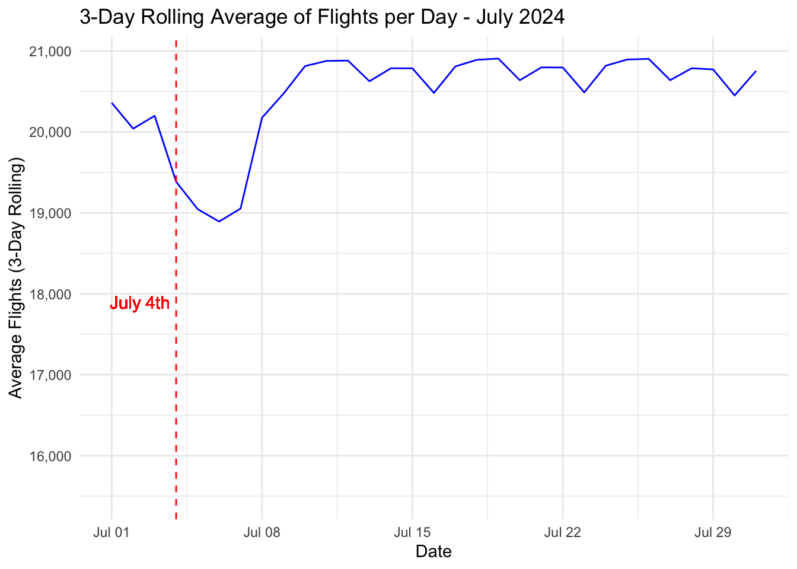

Thinking about flying on your summer vacation? Worried about delays, cancellations, or the best days to fly? By looking at past data, in this case information on all flights within the United States during July 2024, we can get insights into flight patterns that could save you from headaches on your future journeys.
Time Series of Average Flights per Day
First, you might want to know that dates tend to be busier. This data is imperfect since we only know the number of flights, not the number of people flying. However, this is still a useful proxy for how busy the airports are likely to be.
Code
time_data |>ggplot(aes(x = flight_date, y = avg_flights_3_day_rolling))+geom_line(color ="blue") +geom_vline(xintercept =ymd("2024-07-04"), linetype="dashed", color ="red") +geom_text(aes(x =ymd("2024-07-04"), y =max(avg_flights_3_day_rolling), label ="July 4th"), vjust =20, hjust =1.1, color ="red") +labs(title ="3-Day Rolling Average of Flights per Day - July 2024",x ="Date",y ="Average Flights (3-Day Rolling)") +theme_minimal()+scale_y_continuous(labels = scales::comma)

Looking at a three-day rolling average of total flights, it appears that the days around July 4th have fewer flights than the rest of the month. The three-day rolling average hovers areound 20,750 flights for most of the month, but dips as low as 19,000 in the days just after July 4th. If you want to avoid crowds, it might be best to fly right after the 4th of July - but you of course run the risk of cutting your vacation short! Plus, given supply and demand, you might find flights are more expensive on those days.
Busiests Days of the Week to Fly
Even if you’re not flying for the Fourth of July, you might be planning other sorts of travel. Which days of the week are the busiest?
Code
dow_data |>ggplot(aes(x = day, y = count, fill = count)) +geom_bar(stat ="identity") +scale_fill_gradient(low ="forestgreen", high ="red") +labs(title ="Total Number of Flights by Day of the Week - July 2024",x ="Day of the Week",y ="Total Number of Flights") +theme_minimal()+theme(legend.position ="none")+scale_y_continuous(labels = scales::comma)
Based on this bar chart, Monday, Tuesday, and Wednesdays had the most flights in July 2024, with each day seeing around 100,000 flights. Saturdays were the least busy, with just over 75,000 flights. Given these patterns, it looks like business travel is a significant driver of air traffic. If you have flexibility, it looks like a Saturday-Saturday trip could save you some hassle at the airport. But again, if everyone has the same idea, you might find yourself fighting for cheaper tickets, so be sure to book far in advance!
Delays by Airline
On most routes, you’ll have a choice in airlines. If your first concern is getting to your destination on time, you might want to consider the airlines that haven’t had extremely lengthy delays.
Code
delay_data |>mutate(name =str_extract(name, "^[^:]+")) |>ggplot(aes(x =reorder(name, -max_delay), y = max_delay, fill = max_delay)) +geom_bar(stat ="identity") +scale_fill_gradient(low ="forestgreen", high ="red") +labs(title ="Maximum Delay (Minutes) by Airline - July 2024",x ="Airline",y ="Maximum Delay (Minutes)") +theme_minimal() +scale_y_continuous(labels = scales::comma) +theme(legend.position ="none",axis.text.x =element_text(angle =45, hjust =1))
Note that these are the maximum delays, not the average delays, so we have cherry-picked the worst case scenartio for each airline. That being said, the more than 3,000 minute delay (over 50 hours!) on American Airlines might give the punctual traveler pause. Most other airlines’ maximum delays range from 1,000 to 1,500 minutes. Alaska Airlines has the best record, with a maximum delat of just under 500 minutes (about 8 hours). Not great, but your not likely to be stranded overnight with them!
Top Cancellation Reasons for Busiest Airports
Finally, you might be curious about what causes cancellations, and if there are certain airports more prone to cancellations than others.
Code
# Extract city namescancellations <- cancellations %>%mutate(city =str_extract(airport_code, "^[^,]+"))# Step 1: Aggregate by cancellation reasonreason_summary <- cancellations %>%group_by(cancellation_reason) %>%summarise(total_count =sum(cancellation_count),n_airports =n(),.groups ="drop" )# Step 2: Pack outer circles (one per cancellation reason)outer_layout <-circleProgressiveLayout(reason_summary$total_count, sizetype ="area")outer_circles <-bind_cols(reason_summary, outer_layout)# Step 3: For each cancellation reason, pack inner circles (airports)inner_data <- cancellations %>%group_by(cancellation_reason) %>%group_modify(~ {# Pack circles for airports within this reason inner_pack <-circleProgressiveLayout(.x$cancellation_count, sizetype ="area")# Get the corresponding outer circle outer <- outer_circles %>%filter(cancellation_reason == .y$cancellation_reason)# Calculate scaling to fit inner circles within outer circle# Find the bounding circle of inner packing cx <-mean(inner_pack$x) cy <-mean(inner_pack$y) max_dist <-max(sqrt((inner_pack$x - cx)^2+ (inner_pack$y - cy)^2) + inner_pack$radius)# Scale to fit within 75% of outer radius (leaving margin) scale <-ifelse(max_dist >0, (outer$radius *0.85) / max_dist, 1)# Transform coordinates .x %>%mutate(x = outer$x + (inner_pack$x - cx) * scale,y = outer$y + (inner_pack$y - cy) * scale,radius = inner_pack$radius * scale ) }) %>%ungroup()# Step 4: Plotggplot() +# Outer circles (cancellation reasons)geom_circle(data = outer_circles,aes(x0 = x, y0 = y, r = radius, fill = cancellation_reason),alpha =0.25,color ="white",linewidth =3 ) +# Inner circles (individual airports)geom_circle(data = inner_data,aes(x0 = x, y0 = y, r = radius, fill = cancellation_reason),alpha =0.75,color ="white",linewidth =1 ) +# Outer labels (cancellation reasons)geom_text(data = outer_circles,aes(x = x, y = y - radius *0.85, label = cancellation_reason),color ="darkgrey",fontface ="bold",size =6 ) +# Inner labels (city names)geom_text(data = inner_data,aes(x = x, y = y, label = city),color ="white",size =2.5,fontface ="bold" ) +scale_fill_brewer(palette ="Set2") +coord_equal() +theme_void() +theme(legend.position ="none" )
Looking at this packed circle chart, we see that carrier issues are far-and-away the top cause for cancellations at busy airports. Atlanta, the world’s busiest airport, sticks out like a sore thumb for carrier cancellations, followed by Minneapolis, Detroit, and Salt Lake City. These are all Delta hubs, so it seems that Delta had an issue with cancellations in July 2024. Houston’s two airports (Hobby and Bush), Charlotte, and Washington-Reagan were the only major airports where weather was the top reason for cancellations. If you’re flying into or out of these airports, be sure to check the weather before you head to the airport - you just might end up being there longer than you planned!